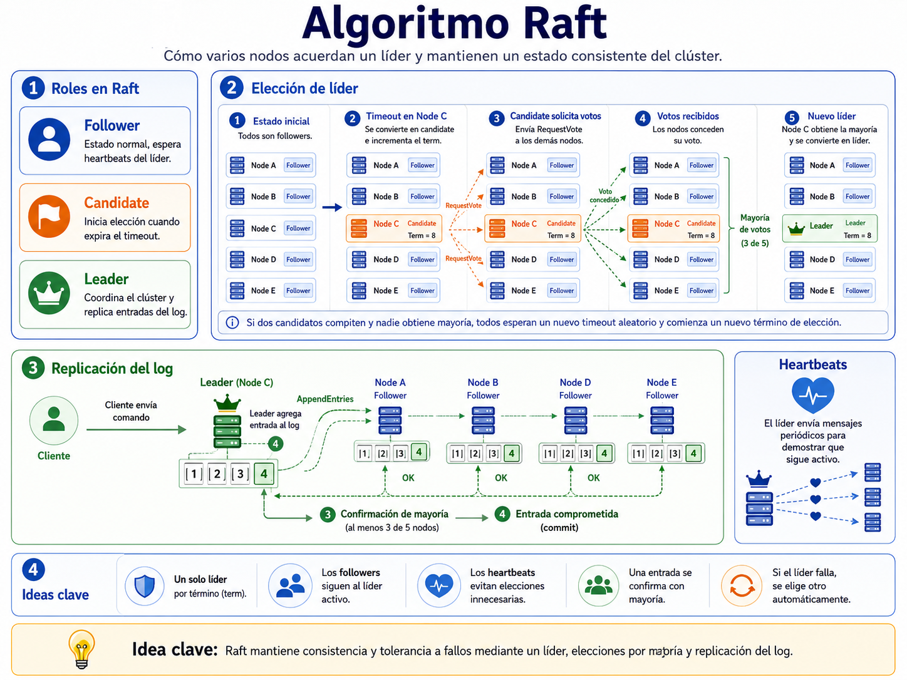

Sistemas Operativos y Servicios de Red
Comprender la arquitectura mínima que permite que Docker Swarm funcione como un orquestador distribuido.
Identificar el rol de los nodos manager y worker.
Distinguir entre plano de control y plano de ejecución.
Reconocer por qué Swarm necesita consenso entre managers.
Coordina el clúster y mantiene el estado deseado.
Ejecuta tasks asignadas como contenedores.
Aumenta capacidad y tolerancia a fallos.
Idea clave: un Swarm puede iniciar con un solo manager, pero el valor de la orquestación aparece cuando hay múltiples nodos donde ubicar tareas.
# Inicializa el Swarm
$ docker swarm init \
--advertise-addr 192.168.56.10
# Entrega el token para unir workers
$ docker swarm join-token worker# El worker se une al clúster
$ docker swarm join \
--token SWMTKN-1-... \
192.168.56.10:2377
# Verificar nodos desde el manager
$ docker node lsAdvertencia didáctica: el parámetro --advertise-addr importa cuando el equipo tiene varias interfaces de red, como suele ocurrir en Vagrant, VirtualBox, WSL o redes de laboratorio.
Corre contenedores asociados a las tasks asignadas.
Informa al manager el estado de las tasks y contenedores.
Se integra a redes overlay y ejecuta la carga real del servicio.
Punto importante: un manager también puede ejecutar tareas como worker, pero en ambientes productivos puede reservarse el manager solo para control.
Si hay varios managers, todos necesitan ponerse de acuerdo sobre una pregunta crítica:
Servicios, redes, nodos, tareas, réplicas y configuración.
Los managers acuerdan cambios antes de aceptarlos como válidos.
Un manager actúa como líder para coordinar las decisiones.

Fácil para prácticas, pero sin alta disponibilidad del plano de control.
Puede tolerar la pérdida de 1 manager y mantener mayoría.
Puede tolerar la pérdida de 2 managers, con más costo de coordinación.
Regla intuitiva: para tomar decisiones, los managers necesitan mayoría. Por eso se prefieren números impares de managers.
Ready indica que el nodo está disponible para el clúster.
Active, Pause o Drain controlan si recibe nuevas tareas.
Leader o Reachable aplica a managers.
Swarm puede crear una nueva task para restaurar el número de réplicas del servicio.
Ejemplo: eliminar un contenedor manualmente.
Las tasks pueden ser reubicadas en otros nodos disponibles, si hay capacidad.
Ejemplo: apagar un nodo worker.
El clúster puede seguir ejecutando contenedores, pero el plano de control queda afectado.
Ejemplo: no se pueden tomar nuevas decisiones de orquestación.
Los managers restantes no pueden acordar cambios confiables en el estado del clúster.
Ejemplo: pérdida de mayoría de managers.